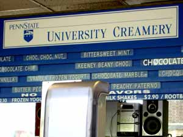
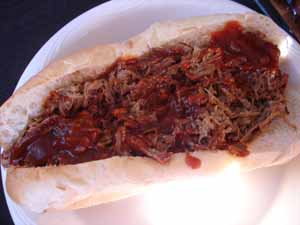

Mom goes to Altoona
We took to the road again last weekend, this time on a shorter trip – to Altoona, where Poppy was performing in a club called Burgi’s Roundhouse on Saturday night. We made a family weekend out of it by taking Calvin on an informal tour of the Penn State campus Sunday afternoon and then heading back to Altoona to watch the Altoona Curve play a baseball game.


What does any of this have to do with food, you may be asking? What, indeed! Among other things, I was retracing Lindy’s trip of a few weeks ago by eating at Clem’s Barbecue, and enjoying ice cream at the Penn State Creamery. Here are the photos to prove it; doesn’t my barbecued brisket sandwich look delicious? We also took a trip down memory lane for Bill while we were in State College and had lunch at The Corner Room, where he used to eat with his parents when they would come to State College to visit him at school there. And probably the most impressive eating experience for Calvin was the stop at the Altoona 24-hour Sheetz after the gig for a late night snack. Although personally I’ve never thought Sheetz could hold a candle to Wawa when it comes to convenience stores, even I have to take my hat off to the one in Altoona; it looks like a futuristic space station and is stocked with every kind of snack and convenience food you can imagine and quite a few you never even thought of.
Now, on to my more immediate concerns and why I haven’t had the heart to do any posting or even much commenting lately; the state of my kitchen project. We are in the middle of the fourth week and as far as I can tell we are barely half-way finished. No one showed up for work at all yesterday and when I finally called in the afternoon I could only get the contractor’s voice mail. He returned my call last night some time and left a message on my cell phone saying he had told me that because of the death of his grandmother they were taking Monday and Tuesday off this week. I know that’s not true; when we talked on Friday he only mentioned taking that day off. The relationship is deteriorating and I know I was too friendly and easy-going when they started. I should have been much more business-like and had higher expectations. It’s always easier to lower the bar than it is to set it higher after a relationship has already begun. When they do work they don’t show up until 11:30 or 12:00; at this rate they won’t be finished the job until Christmas!!
Comments
I think it’s time to sit the head contractor down and have a little talk about honesty and the better business bureau. Did they give you a date when the work would be finished? I’d threaten to find another contractor if they don’t shape up and show up for work at 8am from now on.
Personally, I have no tolerance for people who take advantage of a death to further their own laziness.
Altoona! I haven’t been there in years. Always loved that name though.
Sorry about the kitchen thing. How frustrating. Based on anecdotes I’ve heard of kitchen remodelings the pace of work is often a point of contention but I’d say if you’re happy with the work he’s done so far, you’re still in a good situation.
Tell me, Kathryn, was your last sentence meant to be tongue in cheek, because it actually made me laugh when I read it this morning!
I was at an AA meeting last night complaining about the situation to a man with long-term sobriety and he observed that what I have here is a “good problem” compared to the kinds of problems that folks who are still suffering from their addictions have, such as accidents, bankruptcy, and death. He’s right, too, and I need to step back and regain perspective. This will all be over eventually and I’ll have a wonderful kitchen.
Julie, there really isn’t anything good about Altoona except that Sheetz and the baseball park. Calvin was complaining that there were too many white people there.
have you ever read “A Year in Provence”? I always think about that book when I hear contractor horror stories. You have my sympathy. It seems that there’s not a contractor out there who doesn’t play these games. And once they have your deposit and have torn up your kitchen, what can you do? Wishing you the best of luck with getting him back to work. I hope your kitchen is done soon!
You’re right, Marcy, it’s been years since I read the book but it does resonate. Although technically I’m speaking the same language as these guys, when I speak the blank look on their faces makes me think all they hear is “Blah, blah, blah…” I wish I could figure out a similar brilliant solution to the problem; doesn’t the author eventually send out invitations to an open house and get her work completed that way?
And yes, since we’ve given them a huge chunk of money they have us by the proverbial balls. Once they finish (!) the kitchen they’re supposed to start on the guest bathroom. Of course that won’t be as disruptive, theoretically anyway.
Yes, if you want to use the Mayle’s solution, invite the contractor’s wife and family over for a party…and now that I’ve read your reply I’m having a Far Side moment “What you say to cats
vWhat they hear”The contractor thing is so skanky. Why does it have to be this way?
The last time-when I still had my house-I had a contractor working-I noticed a piece of really cheesy short-cutting he did. I called him on it (politely, mind you, and on the phone, so he didn’t have to face me,even). He actually came over the next day and said he “felt like crying” because I “didn’t respect him.” Ew. Was I supposed to ,like, hug him or something?
Can you imagine him trying to pull that on some guy he was working for? Sometimes I wonder if we’ve gotten anywhere at all.
I love the Altoona Curve field- what could be more small town americana than a baseball field backed by an amusement park! -We went to see the Spikes play at State College (even though they are a Yankee affiliate)-they have a nice little field too.
I think the head contractor is no longer speaking to me; I haven’t seen him or heard from him all week. It just makes me have a constant bad feeling, which is a shame; getting the work done is stressful enough, but to have it accompanied by this other nonsense makes it so much worse.
How about all the between-inning activities at the minor league games – the karaoke, the water balloon tosses, etc? By far the tackiest one we saw was two guys dressed up in over-stuffed, tan, rubbery body suits including painted on black hair, purporting to be “Sumo wrestlers”, bouncing off each other and knocking each other over to the accompaniment of “Kung-Foo Fighting” over the park loudspeaker system. All I could think about was all the Japanese ballplayers in this country now, and how culturally insensitive that was!
Add a comment